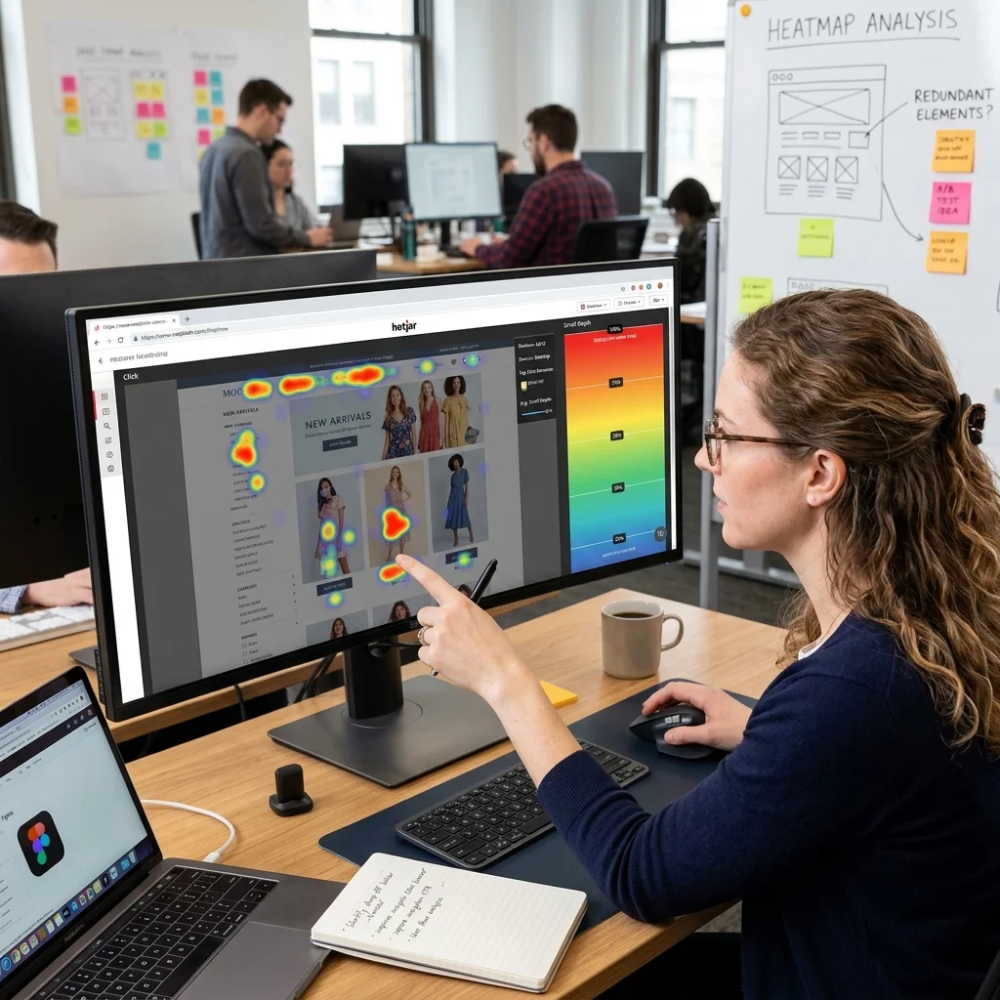

Qu'est-ce qu'un audit UX/UI et pourquoi est-il crucial pour votre site marocain ?
Un audit UX/UI analyse l'interface et l'expérience globale de vos visiteurs. Au Maroc, où l'utilisateur est de plus en plus exigeant, une interface intuitive et agréable fait la différence.

Les 5 étapes d'un audit UX/UI réussi
1. Analyse des parcours utilisateurs
Nous cartographions le chemin typique d'un visiteur, de l'arrivée à la conversion, pour identifier les points de friction.
Quieres aplicar estas estrategias sin esfuerzo? Nuestros expertos de DatRey se encargan.
2. Test d'utilisabilité
Des tests avec des utilisateurs marocains permettent de recueillir des feedbacks concrets sur la navigation, la clarté des informations et la facilité d'utilisation.

3. Évaluation de l'interface visuelle
Nous vérifions la cohérence des couleurs, des typographies, et l'attrait esthétique général. Un design moderne inspire confiance.
4. Analyse de l'accessibilité
Votre site doit être accessible à tous, y compris aux personnes handicapées. Nous vérifions les contrastes, la navigation au clavier, etc.
5. Recommandations et plan d'action
Nous fournissons un rapport détaillé avec des maquettes et des suggestions concrètes pour améliorer l'UX/UI.

Bénéfices d'un audit UX/UI pour votre entreprise au Maroc
- Augmentation du taux de conversion
- Réduction du taux de rebond
- Fidélisation accrue des visiteurs
- Meilleur référencement naturel (Google valorise l'UX)

Offrez à vos clients marocains une expérience inoubliable. Contactez DatRey pour un audit UX/UI sur mesure.